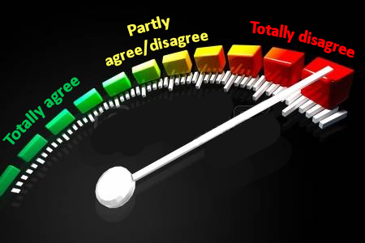

To what extent you agree or disagree essay
This lesson will guide you how to write essays in IELTS Writing that ask you to what extent you agree/disagree. Such questions are very common for IELTS Writing task 2. In such essays your task is to say whether you:
- completely agree with a given statement
- completely disagree with a given statement
- partly agree / disagree
and justify your opinion.
In this lesson you will see IELTS writing task 2 sample question + model answer. Also, you will learn the following points:
- how to decide on your opinion
- how to generate ideas to justify your opinion
- how to give a band 9 answer for agree/disagree question
To what extent you agree/disagree question sample
Let’s look at an example of IELTS writing task 2:
The government's investment in arts, music and theatre is a waste of money. Governments should invest these funds in public services instead.
To what extent do you agree with this statement?
This is a classic example of an IELTS Writing question that asks you to what extent you agree or disagree.
Choose your opinion & generate ideas
Unlike classic agree/disagree questions, to what extent you agree or disagree questions do NOT ask you to clearly determine whether you agree or disagree with the given statement.
In fact, you have 3 major options for your opinion:
AA: You completely agree (provide 2 ideas that strengthen the statement)
DD: You completely disagree (provide 2 ideas that weaken the statement)
AD: You agree or disagree partly (provide 1 idea that strengthens the statement and 1 idea that weakens it)
After you’ve decided your opinion, generate 2-3 supporting points for it.
Now let’s generate supporting points for each of the opinions:
AA: Investment in arts, music and theatre is a waste of money
- Art, music and theatre don’t help to solve urgent problems of the society
- Art and music can develop as hobbies, and saved money can be directed towards urgent needs of the society
- If artists and musicians were employed at more traditional jobs, there would be a great benefit for science and industry
DD: Investment in arts, music and theatre is NOT a waste of money
- The arts and music preserve unique culture and heritage, passing nation’s cultural character and traditions to future generations
- Arts, music and theatre are an integral part of the society’s cultural and intellectual development and amusement
- A strong arts, music and theatre sector is an economic asset that creates new jobs and attracts tourism revenue
AD: Investment in arts is important, but public services should be financed in the first place
For this opinion, just combine ideas from the previous points.
For our essay, we’ll choose the last opinion - partially agree / disagree (AD).
Band 9 answer structure
There are a lot of ways to structure your essay, but we’ll use a structure that has been approved by many IELTS examiners to be high-scoring and coherent.
Band-9 essay structure:
- Introduction
- Body paragraph 1 - the 1st supporting point
- Body paragraph 2 - the 2nd supporting point
- Conclusion
As you already know, you can write the supporting points of your body paragraphs in the following ways: agree + agree, disagree + disagree, agree + disagree. We’ll use the last option as our opinion is partially agree / disagree.
Let’s take a look at each of these sections in detail.
Introduction
Write your introduction in two sentences:
- Sentence 1 - paraphrase the statement (you can use ‘it is argued/considered/thought that’ to start):
It is often argued that the government should finance public services instead of spending its budget on arts, music and theatre.
- Sentence 2 - give your opinion:
Although I agree that government’s investments in public services play a very important role, I think that proper funding of arts sector is also crucial for the society.
Body paragraph 1 - the 1st supporting point
- Sentence 1 - state the first reason you agree/disagree.
This sentence should contain the main idea of the whole 1st paragraph. In our case we’ll use the reason A: why it is important to finance public services. As we’ll be considering opposite opinions, it is a good idea to use a collocation on the one hand to introduce the first reason:
On the one hand, the government should definitely allocate a large part of its budget on public services.
- Sentences 2-3 - explain the reason.
To explain the reason effectively, you can imagine that your examiner didn’t understand what you were talking about and you have to explain every detail:
This economic sector determines the overall quality of life, ensuring that some basic services, like schools, hospitals and roads, are available to all citizens irrespective of their income or social status. Public services satisfy the primary needs of the society and thus need a proper funding, while artists and musicians are not curing diseases or building houses, so their role is secondary.
- Sentence 4 - example.
It’s always good to give examples in your body paragraphs, even if you’re not asked to do it (like in our case):
For example, any country can live without music concerts, but absence of medicine will create significant problems.
- Sentence 5 - a short summary of your ideas in this paragraph:
That’s why the government should adequately finance public services in the first place.
Body paragraph 2 - the 2nd reason you agree/disagree
- Sentence 1 - state the second reason you agree/disagree.
This statement should contain the main idea of the whole 2nd paragraph. This time we’ll use the reason D: why it is important to finance public services. As we are considering opposite opinions, it is a good idea to use a phrase on the other hand to introduce the second reason:
On the other hand, arts, music and theatre are not a waste of money, since they are an integral part of the society’s cultural and intellectual development and amusement.
- Sentences 2-3 - explain the reason (assume that your examiner doesn’t understand the topic at all):
Firstly, art and music draw people’s attention to diverse phenomena and represent the inward significance of things. Quite often a single drawing, piece or song can exhort myriads of people to reconsider their attitude towards some situation. This way, art serves as a major source of nation’s personal and intellectual development. Moreover, visiting museums, watching movies and listening to music are common ways of relaxation and entertainment.
- Sentence 4 - support your idea with an example:
The question doesn’t ask us to give examples, plus we’ve already written a lot in this paragraph, so we’ll skip this point.
- Sentence 5 - a short summary of your thoughts in the 2nd paragraph.
Thus, art sector is also important for the society and should not be neglected.
Conclusion
You can write the conclusion in one sentence that summarizes your opinion + 2 reasons for it:
To conclude, though I agree that the government should allocate a large part of its budget on such urgent needs of the society like public services, I think that arts, music and theatre should also be financed since they play an important role in people’s development and entertainment.
DO NOT write new ideas in the conclusion!
Model answer
This is a full band-9 answer for to what extent you agree or disagree IELTS Writing question above:
It is often argued that the government should finance public services instead of spending its budget on arts, music and theatre. Although I agree that government’s investments in public services play a very important role, I think that proper funding of arts sector is also crucial for the society.
On the one hand, the government should definitely allocate a large part of its budget on public services. This economic sector determines the overall quality of life, ensuring that some basic services, like schools, hospitals and roads, are available to all citizens irrespective of their income or social status. Public services satisfy the primary needs of the society and thus need a proper funding, while artists and musicians are not curing diseases or building houses, so their role is secondary. For example, any country can live without music concerts, but absence of medicine will create significant problems. That’s why the government should adequately finance public services in the first place.
On the other hand, arts, music and theatre are not a waste of money, since they are an integral part of the society’s cultural and intellectual development and amusement. Firstly, art and music draw people’s attention to diverse phenomena and represent the inward significance of things. Quite often a single drawing, piece or song can exhort myriads of people to reconsider their attitude towards some situation. This way, art serves as a major source of nation’s personal and intellectual development. Moreover, visiting museums, watching movies and listening to music are common ways of relaxation and entertainment. Thus, art sector is also important for the society and should not be neglected.
To conclude, though I agree that the government should allocate a large part of its budget on such urgent needs of the society like public services, I think that arts, music and theatre should also be financed since they play an important role in people’s development and entertainment.
(317 words)